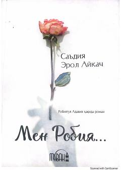

MRIslom valiyasi Robiyatul Adaviya hayoti haqida ta'sirchan badiiy roman.
Bu roman islom olamining mashhur valiyasi Robiyatul Adaviya hayoti haqida yozilgan badiiy asardir. Muallifa Sa'diya Erol Aykach ko'plab manoqib va rivoyatlarni o'rganib, ularni bir armonik hikoyaga birlashtirgan. Asar Robiyatul Adaviyaning ruhiy olami, muhabbati va valiyligini kitobxonga yaqin va jonli tarzda taqdim etadi.